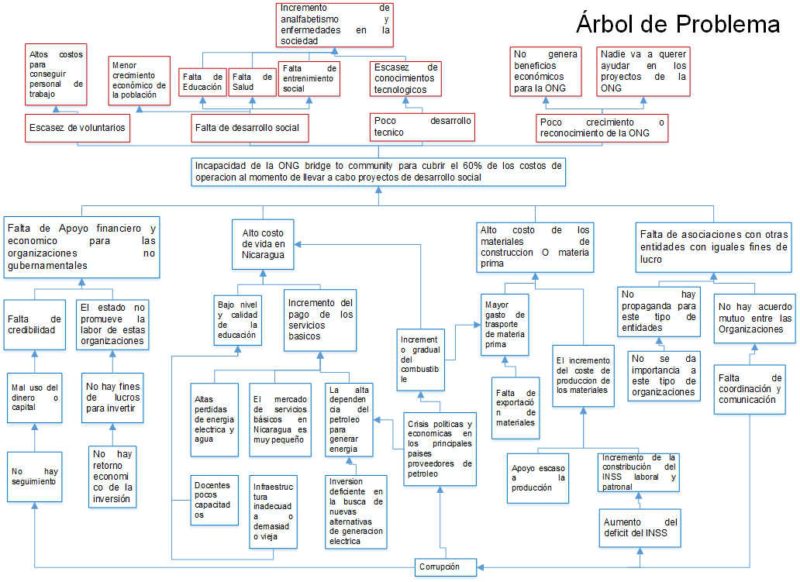
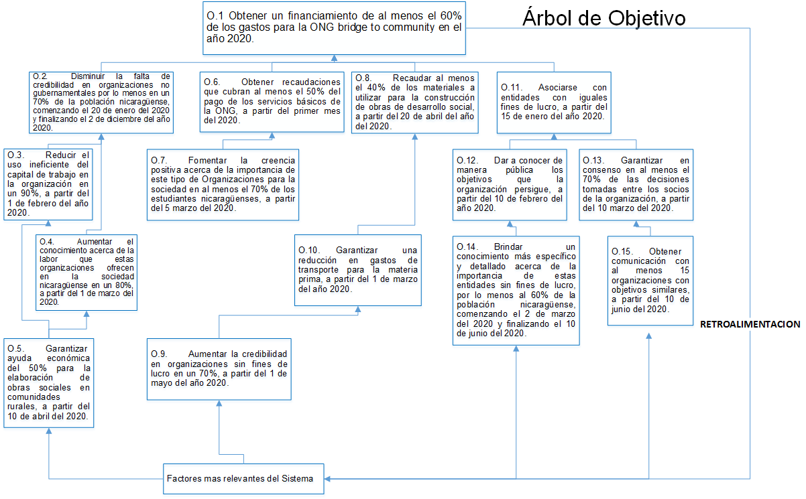

Para poder contrarrestar los problemas se procedió establecer objetivos que disminuyeran el impacto de las causas de la situación problémica dentro de la ONG, así como las concecuencias que esto puede conllevar
Árbol de Problemas

Árbol de Objetivos

Objetivos y Concecuencias Positivas
Objetivos
Obtener un financiamiento de al menos el 60% de los gastos para la ONG bridge to community en el año 2020.
Disminuir la falta de credibilidad en organizaciones no gubernamentales por lo menos en un 70% de la población nicaragüense, comenzando el 20 de enero del 2020 y finalizando el 2 de diciembre del año 2020.
Reducir el uso ineficiente del capital de trabajo en la organización en un 90%, a partir del 1 de febrero del año 2020.
Aumentar el conocimiento acerca de la labor que estas organizaciones ofrecen en la sociedad nicaragüense en un 80%, a partir del 1 de marzo del 2020.
Garantizar ayuda económica del 50% para la elaboración de obras sociales en comunidades rurales, a partir del 10 de abril del 2020.
Obtener recaudaciones que cubran al menos el 50% del pago de los servicios básicos de la ONG, a partir del primer mes del 2020.
Fomentar la creencia positiva acerca de la importancia de este tipo de Organizaciones para la sociedad en al menos el 70% de los estudiantes nicaragüenses, a partir del 5 marzo del 2020.
Recaudar al menos el 40% de los materiales a utilizar para la construcción de obras de desarrollo social, a partir del 20 de abril del año del 2020.
Reducir los índices de corrupción en organizaciones sin fines de lucro en un 70%, a partir del 1 de mayo del año 2020.
Garantizar una reducción en gastos de transporte para la materia prima, a partir del 1 de marzo del año 2020.
Asociarse con entidades con iguales fines de lucro, a partir del 15 de enero del año 2020.
Dar a conocer de manera pública los objetivos que la organización persigue, a partir del 10 de febrero del año 2020.
Garantizar en consenso en al menos el 70% de las decisiones tomadas entre los socios de la organización, a partir del 10 marzo del 2020.
Brindar un conocimiento más específico y detallado acerca de la importancia de estas entidades sin fines de lucro, por lo menos al 60% de la población nicaragüense, comenzando el 2 de marzo del 2020 y finalizando el 10 de junio del 2020.
Obtener comunicación con al menos 15 organizaciones con objetivos similares, a partir del 10 de junio del 2020.
Concecuencias positivas
Este objetivo permitirá una disminución de los gastos de operación de la organización al momento de realizar una obra social, a la vez ayudará a obtener dinero extra para cubrir los gastos de servicios básicos de la ONG, tales como Agua, Energía eléctrica, etc.
De cumplirse este objetivo muchas personas y entidades más conocerán de la verdadera labor que las ONG emplean en la sociedad, y querrán aportar o ayudar más a dichas organizaciones.
Si este objetivo llegara a cumplirse, se disminuiría enormemente la cantidad de dinero mal gastado de la ONG, y podría utilizarse como base para futuras aportaciones a la sociedad o bien para el pago de empleados, etc.
Este objetivo permitirá que muchas personas se den cuenta del importante papel que emplean este tipo de organizaciones para el desarrollo económico y social del país.
Al garantizar una ayuda económica de la mitad de la inversión, le permitirá a la ONG ahorrarse ese dinero, y el crecimiento y desarrollo de la sociedad no se detendrá.
Al constar con un mayor apoyo financiero para la ONG, esta podrá reclutar dinero y utilizarlo para mejora de infraestructura de la misma o para cubrir gastos en alimentación para los voluntarios.
Ya que los jóvenes son el futuro del país, este objetivo les ayudara a tomar conciencia acerca de la importancia del trabajo que las ONG ejercen y además a hacer un cuido mayor en sus escuelas, centros de salud, etc.
Al recaudar Materiales para la construcción de una obra social, esto le permitirá a la ONG y a los donantes ahorrar dinero en la compra de materia prima, además las materias restantes después de haber realizado una obra social, podrán ser reutilizados en futuras construcciones para otras sociedades.
Este objetivo permitirá que en las organizaciones en beneficio de la sociedad sean más transparente y a su vez que sea más creíble la labor de ello, y también podría atraer a nuevos inversionistas para la organización.
Con mayor cantidad de gastos de transportes sean ahorrados esto le permitirá a la ONG invertir en otro tipo de causas ya sea para la compra de más materia prima o para el pago de los trabajadores.
Al ampliar más la cantidad de socios que persiguen los mismos objetivos, esto le abrirá más puertas a la organización para obtener fondos por medio de nuevos inversionistas o donadores.
Al dar a conocer públicamente los objetivos que persigue la ONG, esto le permitirá a la población nicaragüense conocer las intenciones o los fines que esta tiene, por lo cual necesita de ayuda económica o financiera, y de igual forma esto aporta mejoras a la misma sociedad en su desarrollo.
Este objetivo permitirá la satisfacción de todos los socios de la organización por las decisiones tomadas acerca de en donde se van a desarrollar obras sociales, por lo cual pueden llegar a realizar más mejoras y contribuciones a la sociedad.
Si se cumple este objetivo permitirá realizar conciencia acerca del importante trabajo o papel que estas entidades realizan para que toda sociedad se digna en educación, salud y entretenimiento, ya que estas ayudan al desarrollo de las mismas.
Permitirá ampliar las oportunidades de atraer nuevos inversionistas hacia la Organización, además de disminuir los gastos de operaciones al momento que se realizan los proyectos de desarrollo social.
Alternativas de Solución y Concecuencias Negativas
Alternativas de Solución
Solicitar apoyo con donaciones a los empresarios y micro-empresarios de la localidad para recolectar los fondos necesarios, a un costo de $300.00.
Facilitar boletines informativos al público acerca de los proyectos realizados por la ONG brindando la información acerca de los recursos recolectados previamente, los recursos utilizados y los resultados obtenidos que tendrá un costo de $75.00.
Habilitar un sitio web en el que se dispongan reportes en tiempo real acerca de los recursos recolectados, los recursos utilizados y los resultados obtenidos; información disponible para acceder en cualquier momento que tendrá un costo de $680.00.
Realizar una valoración de las funciones de los puestos de trabajo dentro de la institución partiendo de los manuales organizacionales que están disponibles, a un costo de $200.00.
Brindar entrevistas a distintos medios de comunicación locales dando a conocer las labores que comprende la ONG, a un costo de $100.00.
Solicitar apoyo con donaciones a los empresarios y micro-empresarios de la localidad para recolectar los fondos necesarios $300.00.
Lanzar campañas de recolectas con apoyo de los distintos centros de estudios secundarios y estudios superiores de la localidad que tendrá un costo de $105.00.
Realizar foros informativos con el apoyo de los beneficiados para que brinden, de primera mano, su experiencia respecto a las labores que realiza la institución con el apoyo de sus colaboradores que tendrá un costo de $30.00 por cada foro.
Solicitud de apoyo a distintas ferreterías y entidades comerciales que pueda contribuir con recursos para la realización de proyectos que requieran materiales de construcción, a un costo de $100.00.
Contratar personal de supervisión y adquirir equipos de seguridad, a un costo de $ 400.00.
Realizar convenios con la alcaldía municipal de la localidad para que esta facilite el transporte de los materiales necesarios para algunos proyectos, a un costo de $100.00.
Realizar reuniones con distintas organizaciones para plantear y organizar un plan estratégico de colaboración mutua, a un costo de $250.00.
Publicar en las distintas redes sociales de la ONG los distintos objetivos con la que esta cuenta para el conocimiento de la población nicaragüense, a un costo de $30.00.
Establecer una política de aprobación de proyectos o actividades que pueda garantizar la transparencia y la aceptación de los distintos socios y directivos de la ONG, a un costo de $150.00.
Proporcionar brochures informativos a cerca de la información general de la institución a la población general nicaragüense.
Brindar entrevistas a distintos medios de comunicación locales compartiendo la información general de la institución, a un costo de $150.00.
Utilizar las redes sociales para promover la información de la institución, a un costo de $30.00.
Reservar entrevistas con los distintos directivos de otras ONG, a un costo de $200.00.
Concecuencias Negativas
Al establecer un objetivo de recaudación con un valor alto se corre el riesgo de no poder cumplir con dicho objetivo.
Brindar información de esta manera añade un costo adicional a las operaciones de la institución.
Usar ese tipo de tecnologías resulta demasiado costoso implementarlas y aún más el mantenerlas, costos en los cuales la organización puede no sustentar en un momento dado.
De realizar cambios en las funciones de los trabajadores estos pueden verse afectados en el desempeño de sus funciones por el hecho de no estar acostumbradas a las mismas.
El realizar este tipo de campañas puede afectar con el tiempo de los trabajadores que participen en ellas lo que a la vez afectaría al tiempo que necesitan para desempeñar sus funciones y cumplir con sus responsabilidades para con la ONG.
Existe la probabilidad que no se pueda lograr la adquisición de esas nuevas aportaciones esperadas lo que podría afectar con las planificaciones de las actividades de la institución.
Se corre el riesgo de los gastos para realizar dicha alternativa sea mayor que los posibles beneficios económicos que puedan lograr conseguir.
Puede darse el caso de que los beneficiaros se rehúsen a ser partícipes en los foros a desarrollar.
Puede darse una negativa por parte de estas entidades a colaborar con la institución.
Existe la posibilidad de que las aportaciones brindadas por estas entidades no cubran todos los recursos necesarios para ONG.
La corrupción es un factor cuya capacidad de control puede ser muy baja o nula, lo que vuelve el resultado de la misma completamente impredecible.
Puede existir una renuencia de colaboración por parte de la alcaldía lo que puede afectar en los planes de la ONG.
En ocasiones la alcaldía podría tener complicaciones para cumplir con los transportes de los materiales, lo que puede retrasar las actividades de la institución.
Las reuniones pueden quedarse en eso, reuniones, y podrían no llegar a convertirse en acciones o arreglos de colaboración.
Las redes sociales de la ONG pueden no contar con muchos seguidores, lo cual evitaría que la cantidad de personas que la institución esperaba, no visualizaran la información compartida en dichas redes sociales.